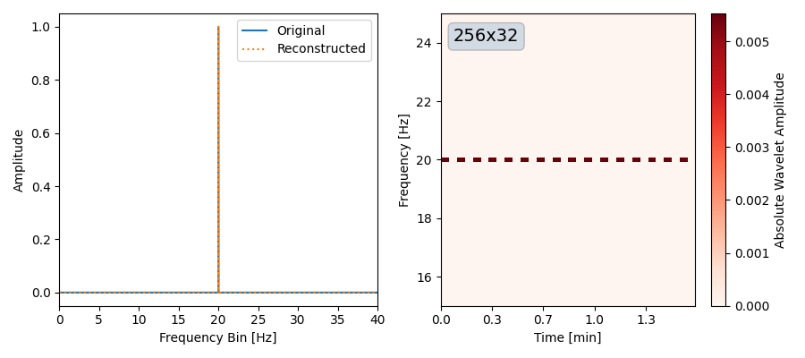

Example#
Time to Wavelet#
Let’s transform a time-domain signal (of length \(N\)), to the wavelet-domain (of shape \(N_t\times N_f\)) and back to time-domain.
! pip install pywavelet -q
Provide data as a TimeSeries/FrequencySeries object
These objects will ensure correct bins for time/frequency in the WDM-domain.
Freq to Wavelet#
This time, we use a sine-wave in the frequency domain.
import numpy as np
from pywavelet.types import FrequencySeries
from pywavelet.transforms import from_freq_to_wavelet, from_wavelet_to_freq
import matplotlib.pyplot as plt
f0 = 20
dt = 0.0125
Nt = 32
Nf = 256
N = Nf * Nt
freq = np.fft.rfftfreq(N, dt)
hf = np.zeros_like(freq, dtype=np.complex128)
hf[np.argmin(np.abs(freq - f0))] = 1.0
h_freq = FrequencySeries(data=hf, freq=freq)
h_wavelet = from_freq_to_wavelet(h_freq, Nf=Nf, Nt=Nt)
h_reconstructed = from_wavelet_to_freq(h_wavelet, dt=h_freq.dt)
fig, axes = plt.subplots(1, 2, figsize=(9, 4))
_ = h_freq.plot(ax=axes[0], label="Original")
_ = h_wavelet.plot(ax=axes[1], absolute=True, cmap="Reds")
_ = h_reconstructed.plot(ax=axes[0], ls=":", label="Reconstructed")
axes[1].set_ylim(f0 - 5, f0 + 5)
axes[0].legend()
fig.savefig("roundtrip_freq.png")
plt.close()
